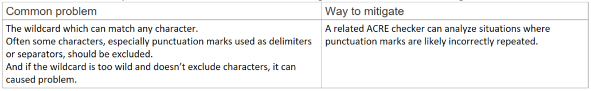
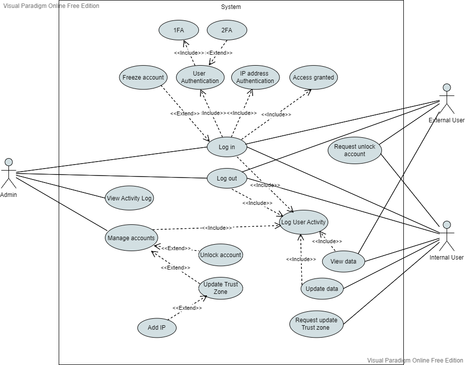
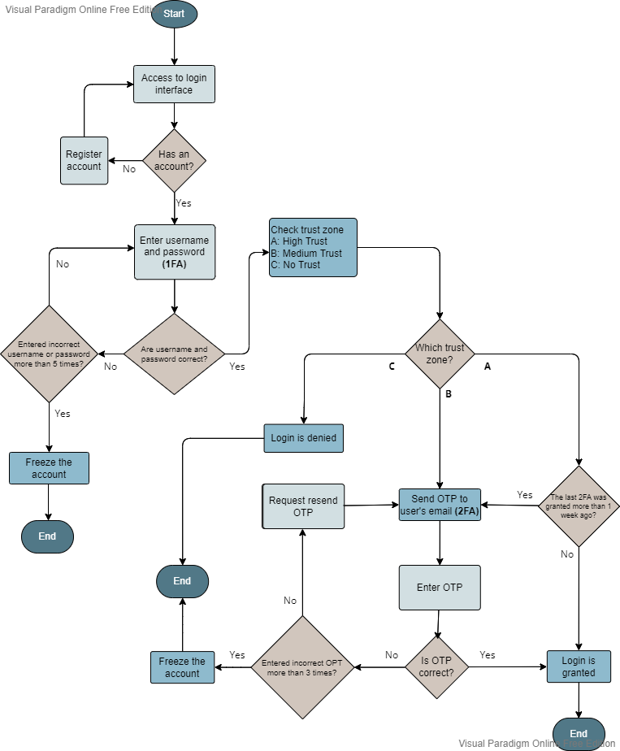
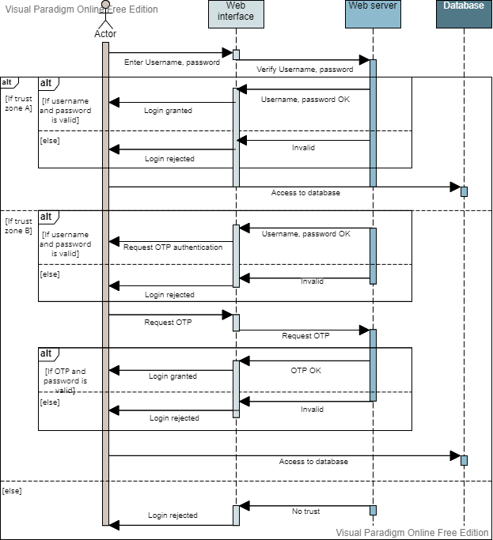
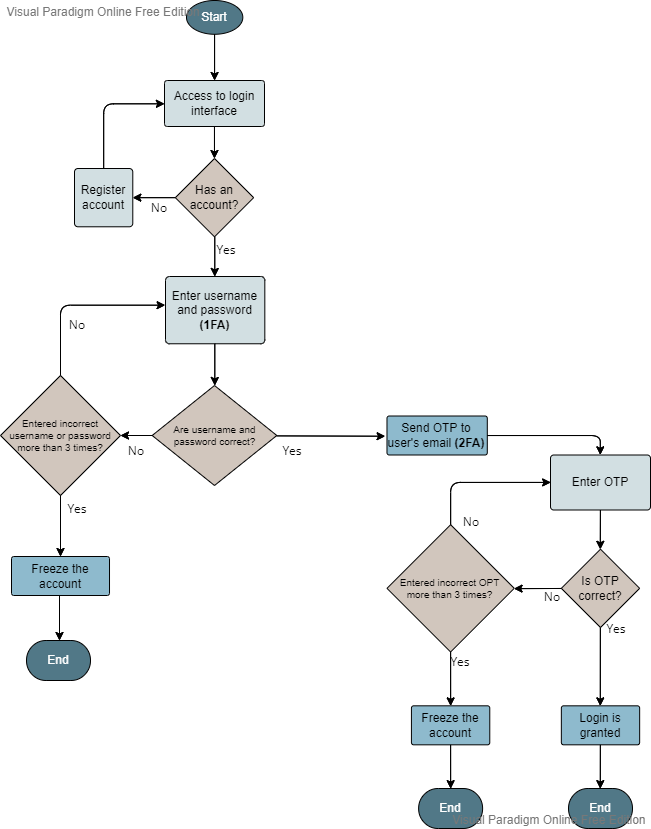

MY ARTEFACT
All artefacts demonstrating development over the duration of the module.
Artefact Types
Codio Activity
Exploring Python tools and features
Part I
In this example, you will compile and run a program in C using the Codio workspace provided (Buffer Overflow in C). The program is already provided as bufoverflow.c - a simple program that creates a buffer and then asks you for a name, and prints it back out to the screen.
This is the code in bufoverflow.c (also available in the Codio workspace):
int main(int argc, char **argv)
{
char buf[8]; // buffer for eight characters
printf("enter name:");
gets(buf); // read from stdio (sensitive function!)
printf("%s\n", buf); // print out data stored in buf
return 0; // 0 as return value
{
Questions and my Answers
• What happens?
Output shows (first time):
Enter name: HungWeiLin
HungWeiLin
*** stack smashing detected ***: terminated
Aborted (core dumped)
Output shows (first time):
Enter name: HungWeiLin
HungWeiLin
*** stack smashing detected ***: terminated
Aborted (core dumped)
• What does the output message mean?
It means that it have a buffer overflow and the canary gets overwritten by a different value.
Part II
Now carry out a comparison of this code with one in Python (Buffer Overflow in Python), following these instructions:
In the Codio workspace, you will be using the file called Overflow.py:
buffer=[None]*10
for i in range (0,11):
buffer[i]=7
print(buffer)
Questions and my Answers
• Run your code using: Python overflow.py (or use the codio rocket icon)
• What is the result?
Traceback (most recent call last):
File "overflow.py", line 3, in
buffer[i]=7
IndexError: list assignment index out of range
• Read about Pylint at http://pylint.pycqa.org/en/latest/tutorial.html
• Install pylint using the following commands: pip install pylint (in the command shell/ interpreter)
• Run pylint on one of your files and evaluate the output: pylint your_file
• (Make sure you are in the directory where your file is located before running Pylint)
• What is the result?
************* Module Overflow
Overflow.py:4:0: C0303: Trailing whitespace (trailing-whitespace)
Overflow.py:5:0: C0304: Final newline missing (missing-final-newline)
Overflow.py:1:0: C0103: Module name "Overflow" doesn't conform to snake_case naming style (invalid-name)
Overflow.py:1:0: C0114: Missing module docstring (missing-module-docstring)
------------------------------------------------------------------
• Does this tell you how to fix the error above?
Yes!
Exploring Python tools and features
from cmd import Cmd
import os
class MyPrompt(Cmd):
def do_list(self, rootdir):
'''lists the contents of the current directory.'''
rootdir = '/home/codio/workspace'
for file in os.listdir(rootdir):
d = os.path.join(rootdir, file)
if os.path.isdir(d):
print(file)
def do_add(self, inp):
'''add the two numbers together and provide the result.'''
a = input('Enter first number:')
b = input('Enter second number:')
try:
print(int(a)+int(b))
except:
print("Please enter only number for addition")
def do_exit(self, inp):
'''exit the application.'''
print("Bye bye!")
return True # end the loop
#To run the class in a loop
MyPrompt().cmdloop()Developing an API for a Distributed Environment
Question 1
Run the API.py code. Take a screenshot of the terminal output. What command did you use to compile and run the code?

Question 2
Run the following command at the terminal prompt: w3m http://127.0.0.1:5000/user/Ann
What happens when this command is run, and why?
The command does not work for me. I have tried to install the w3m, but not able to find any install command that work.
I assume that the output will be "200 OK"

Question 3
Run the following command at the terminal prompt: w3m http://127.0.0.1:5000/user/Adam
What happens when this command is run, and why?
I am not able to get the expected output as I mentioned from Question 2.
But I assume that the output will be "404 Not Found", as the user Adam does not exist.
Programming language concepts
Regex
Question
What are the common problems associated with the use of regex? How can these be mitigated?
What is an Ontology
Ontology is a data model that can represent concept in a visualized way. It can capture objects, activities, and relationship and further demonstrate an comprehensive idea.
Computational ontologies are a means to formally model the structure of a system.(Guarino et al., 2009) It can be used as a first stage of software design, as it can visualize all the components and the relationships between each other.
Guarino, N., Oberle, D., & Staab, S. (2009). What Is an Ontology? Handbook on Ontologies, 1–17. https://doi.org/10.1007/978-3-540-92673-3_0
Individual Contribution of Team Project
Diagrams Design
Use Case Diagram – 2FA and Trust-based authorization
Activity Diagram - 2FA login and Trust Zone update

Flowchart Diagram - 2FA and Trust Model
Sequence Diagram – Users access to Database
Flowchart Diagram - Modified in Unit 11
Sequence Diagram – Modified in Unit 11